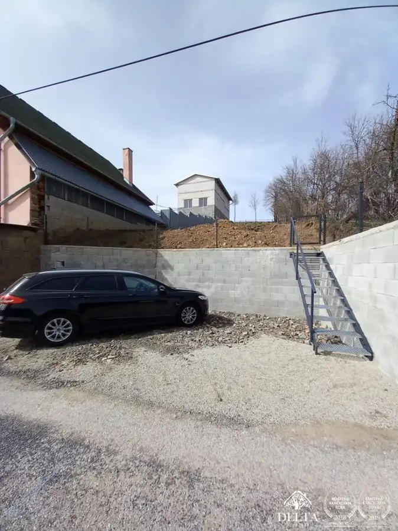
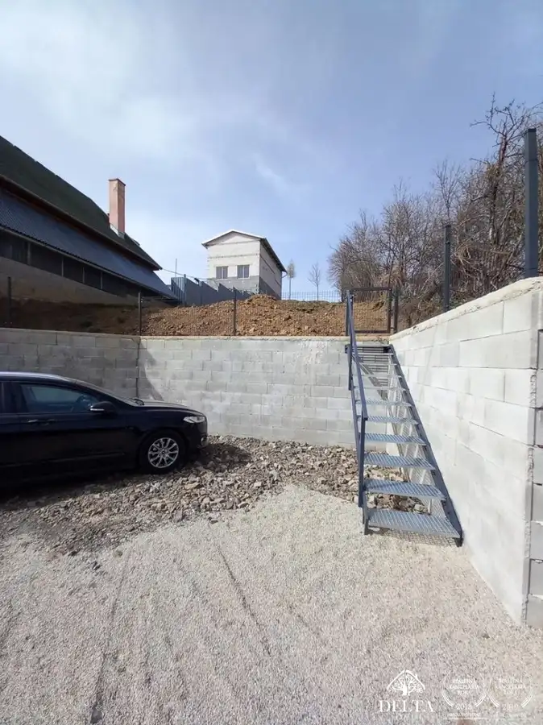
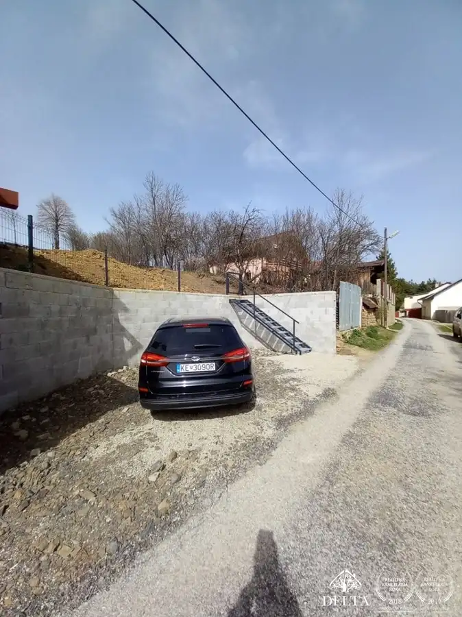
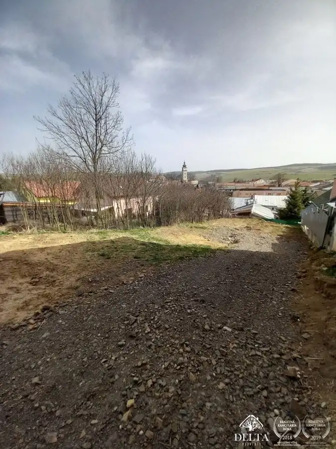

ZNÍŽENÁ CENA!!! Pozemok v Ľubici, ulica Bernolákova
Ľubica




- Plocha384 m²
- VlastníctvoOsobné
O nehnuteľnosti
EXKLUZÍVNE -DELTA PROPERTY - realitná kancelária z poverenia majiteľa ponúka na predaj pozemok v Ľubici na Bernolákovej ulici.- rozloha pozemku 384 m2,- intravilán,- približné rozmery 10 m šírka * 39 m dĺžka,- svahovitý,- IS pri hranici pozemku,- novovybudovaná čistička odpadových vôd,- vybudované parkovacie miesto, brána, schody na pozemok,- podľa územného plánu schválené na výstavbu rodinného domu,- asfaltová príjazdová cestaPozemok sa nachádza v tichej , menej frekventovanej uličke v zástavbe rodinných domov.Cena: 39. 900,- €Zaujala Vás naša ponuka ? Neváhajte ma kontaktovať na tel. čísle 0917 206 415 alebo mailom pattermannova@deltaproperty.eu a rada Vás prevediem danou nehnuteľnosťou.V cene je zahrnuté kompletné právne poradenstvo.Realitná kancelária DELTA PROPERTY sa riadi Všeobecnými podmienkami sprostredkovania, ktoré boli schválené Realitnou úniou. Uvedená cena je konečná, zahŕňa províziu realitnej kancelárie, právny servis zabezpečovaný spolupracujúcou advokátskou kanceláriou, úhradu základného správneho poplatku na katastri, poradenstvo k prevodu nehnuteľnosti a bezplatnú ponuku financovania prostredníctvom hypotéky.
Parametre
- Druh
- Pozemok pre rodinné domy
- Dátum zverejnenia
- 01. 04. 2024
- Elektrina
- Pri pozemku - 230 V
- Funkčné využitie
- Výstavba rodinného domu
- Odpadové vody
- Na pozemku - Čistička odpadových vôd
- Plocha pozemku
- 384 m²
- Plyn
- Nedostupné
- Pripravenosť k výstavbe
- Vydané územné rozhodnutie
- Prístupová komunikácia
- Asfaltová
- Terén pozemku
- Svahovitý
- Typ
- Predaj
- Vlastníctvo
- Osobné
- Voda
- Pri pozemku - Verejný vodovod
- Územie
- Intravilán